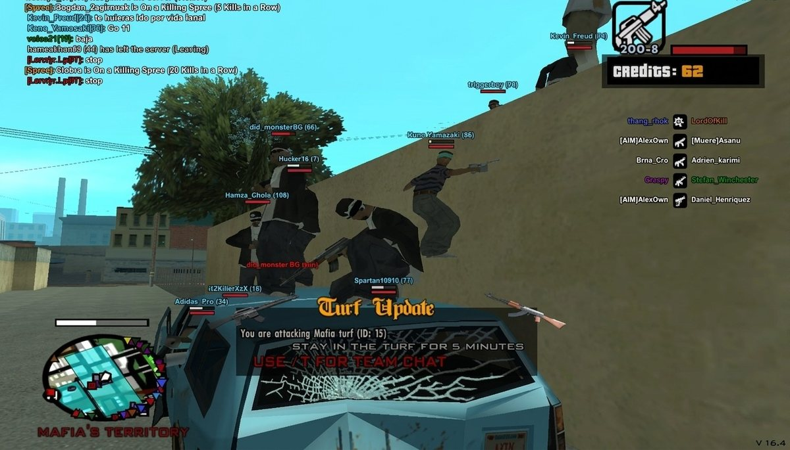

SAMP Online Gaming Server
A persistent multiplayer server for GTA: San Andreas, with custom gameplay mechanics and admin tooling — built and maintained solo through school.

Overview
Long before university, this was the project that got me into programming seriously: an online multiplayer server for Grand Theft Auto: San Andreas built on the SA-MP (San Andreas Multiplayer) platform.
Everything from custom gameplay mechanics to player management systems and administration tools was written in Pawn, SA-MP's scripting language, and run as a persistent, always-on server that real players connected to over several years.
Maintaining a live multiplayer server — with real players, real bugs reported in real time, and real moderation problems — was an early, practical lesson in building and operating software that has to keep running, not just run once.
Key Features
- 01Custom gameplay mechanics and game modes scripted in Pawn
- 02Player management and persistence systems for an always-on server
- 03In-game administration tools for moderation and server operations
- 04Maintained continuously over roughly two years with an active player base